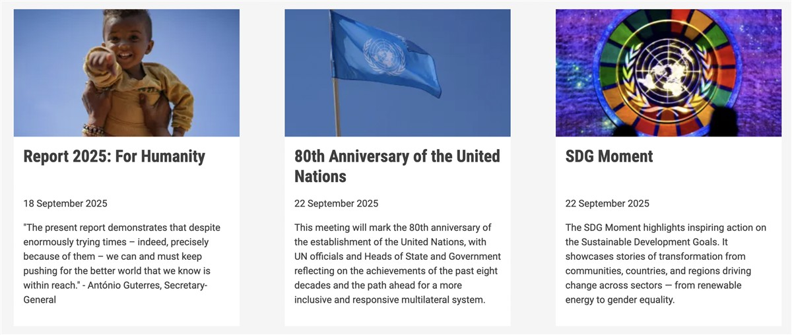
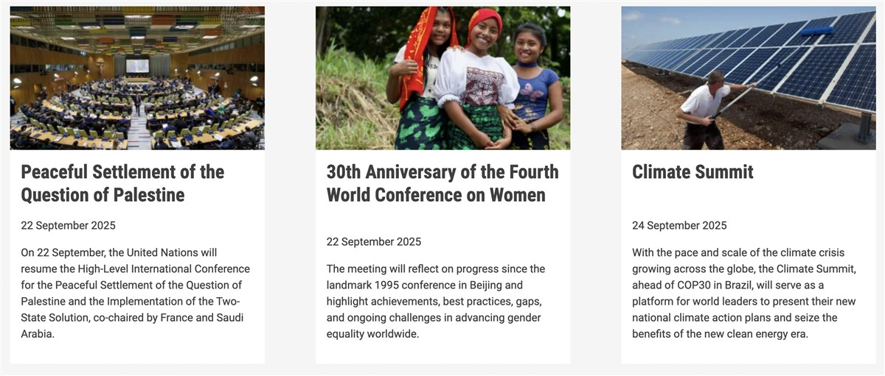
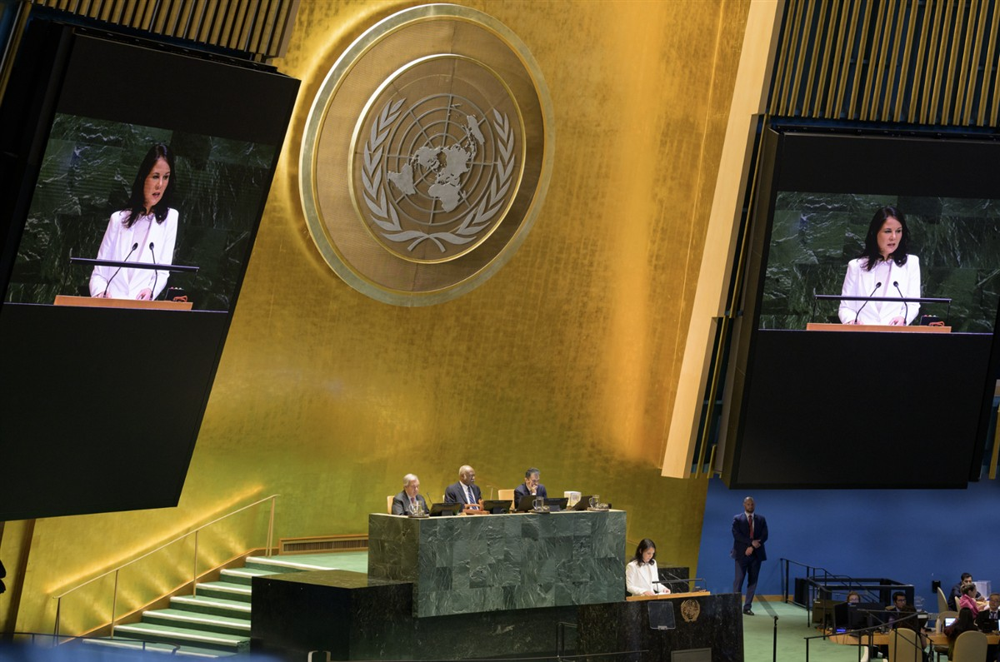

Her Excellency Annalena Baerbock, President of the 80th session of the United Nations General Assembly. UN Photo/Manuel Elías.
ON SOURCE: UN GENERAL ASSEMBLY
General Debate of the 80th Session
The debate of the 80th session will open on Tuesday, 23 September, continue through Saturday, 27 September, and conclude on Monday, 29 September 2025.
This year, the theme for the general debate is 'Better together: 80 years and more for peace, development and human rights'.
Learn more about the General Debate in the FAQ.



About the General Debate
What is the General Debate?
The General Debate of the United Nations General Assembly is the opportunity for Heads of State and Government to come together at the UN Headquarters and discuss world issues.
On this site, you will find a daily list of speakers, with links to individual pages for each speaker. These pages will be published as soon possible and will present information pertaining to the speaker: an on-demand video, the statement (.pdf) and a summary of the statement, a downloadable photo, and audio files (.mp3).
ON SOURCE: UN GENERAL ASSEMBLY